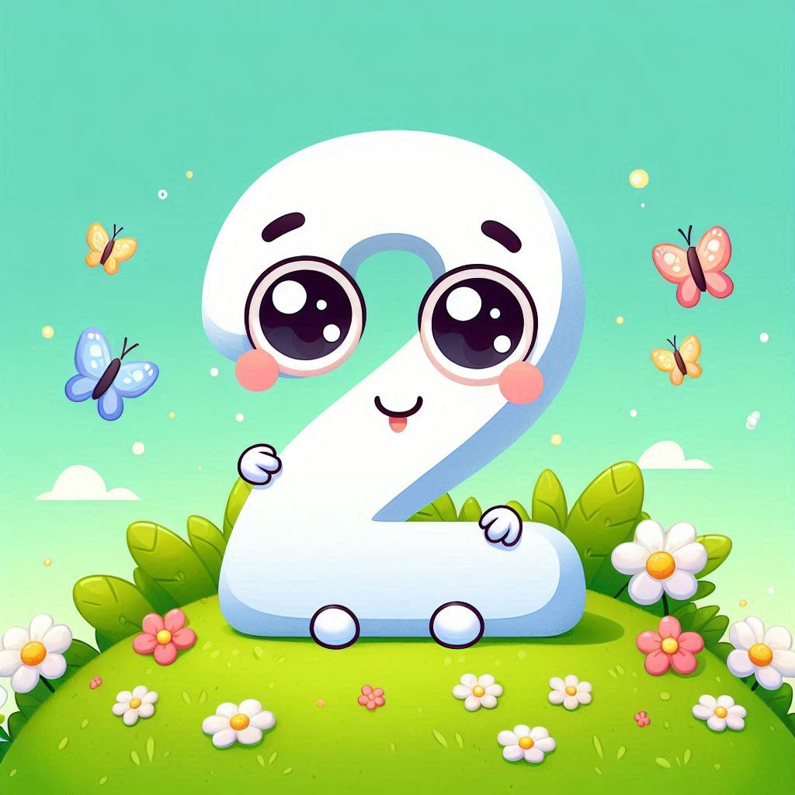
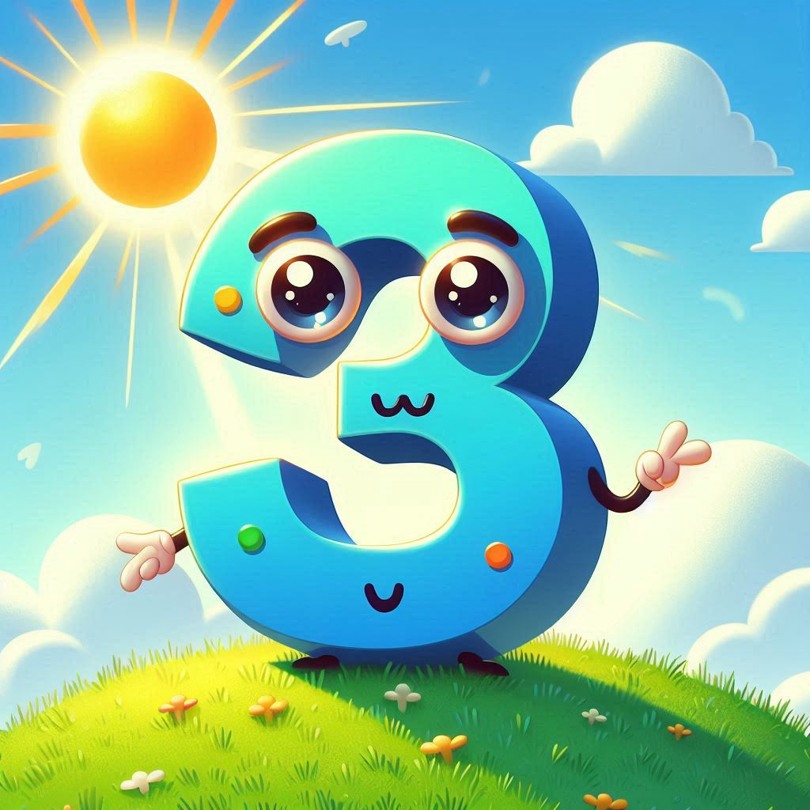
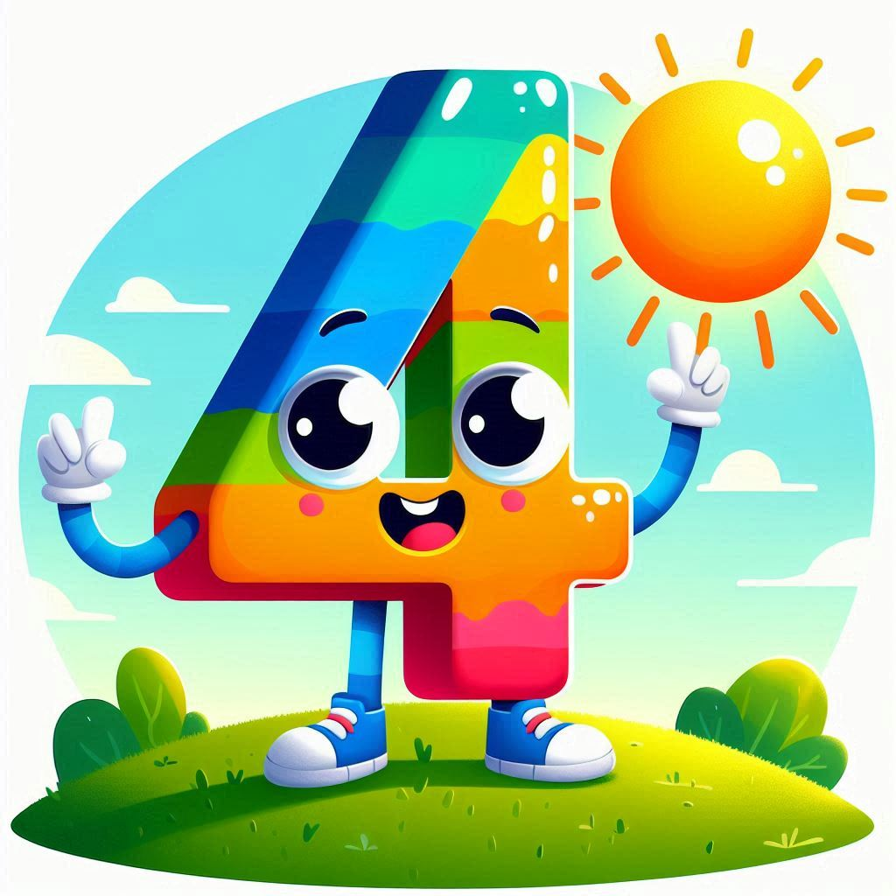
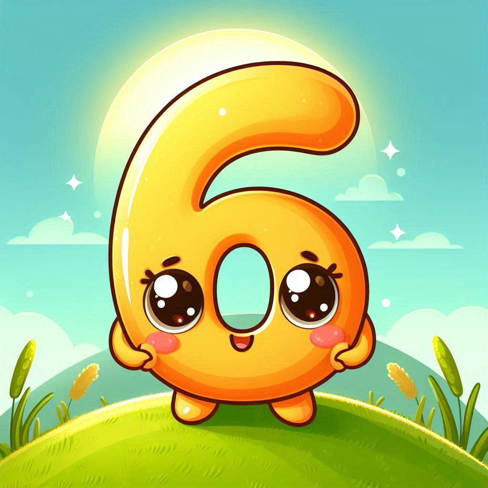
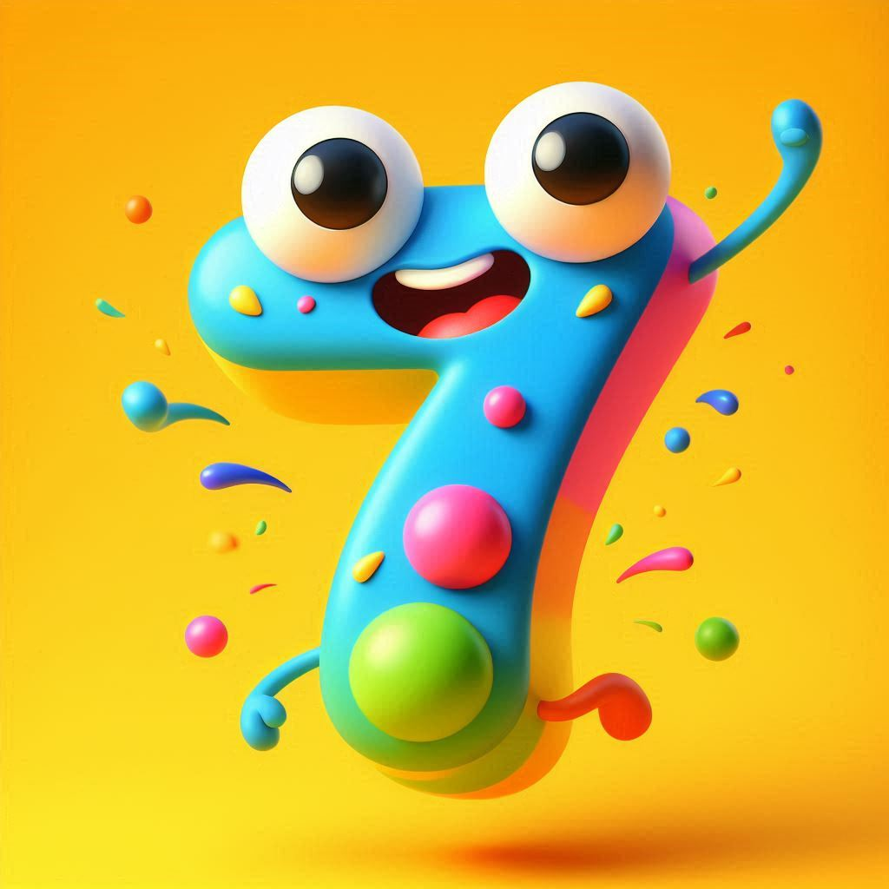
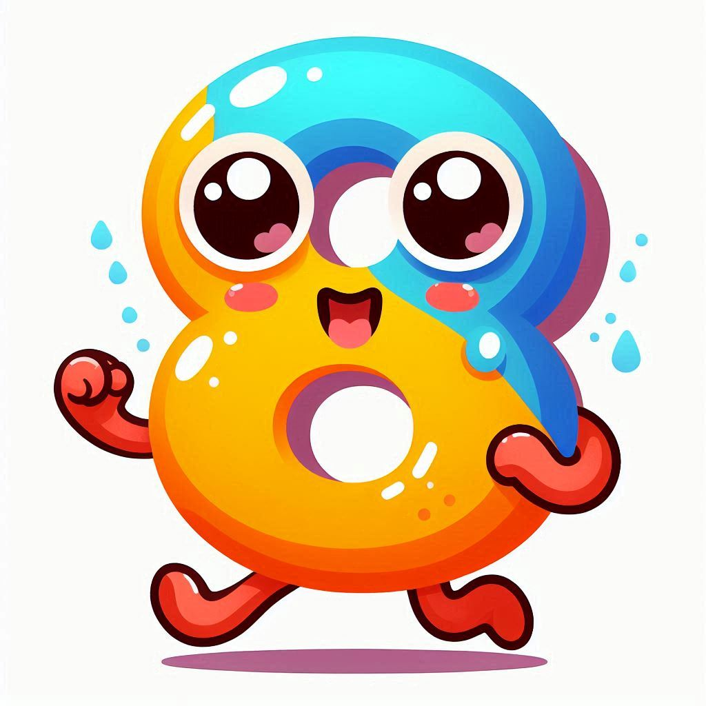
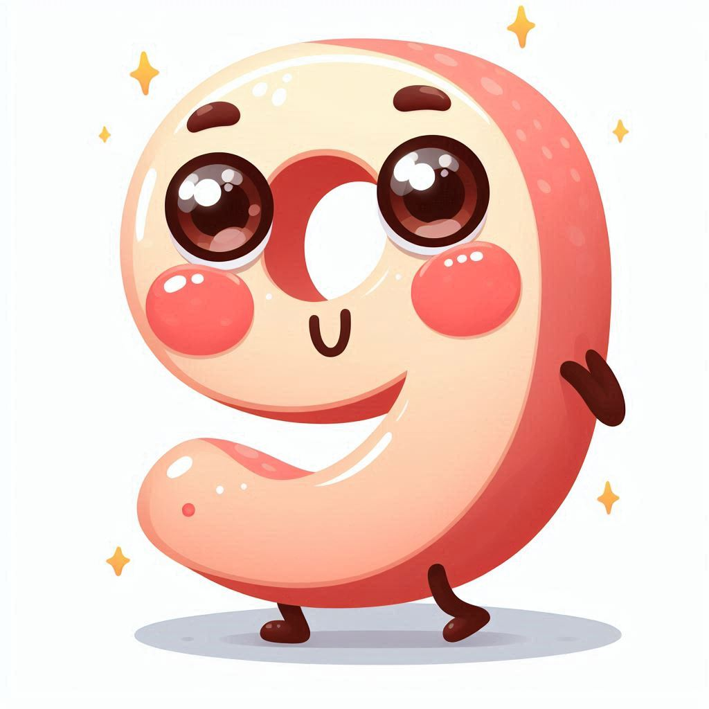
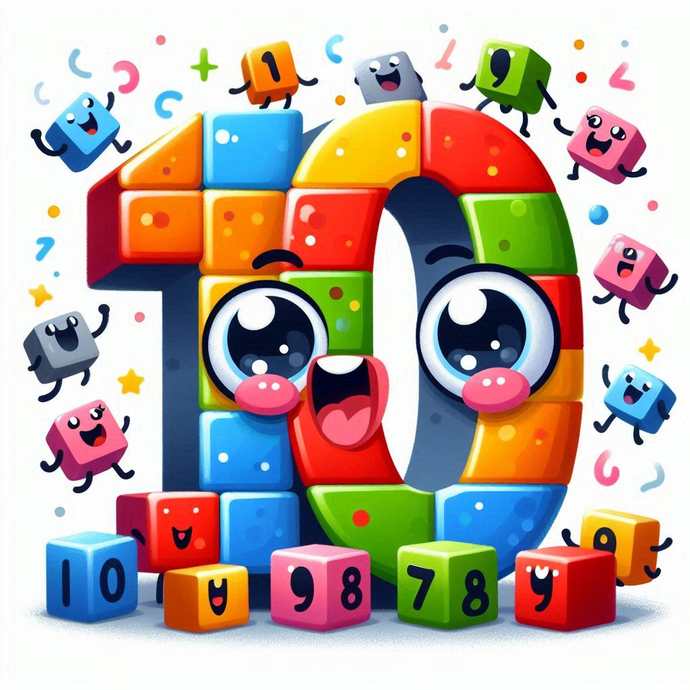

Uno en francés se dice:
Un
Dos en francés se dice:

Deux
Tres en francés se dice:

Trois
Cuatro en francés se dice:

Quatre
Cinco en francés se dice:

Cinq
Seis en francés se dice:

Six
Siete en francés se dice:

Sept
Ocho en francés se dice:

Huit
Nueve en francés se dice:

Neuf
Diez en francés se dice:

Dix